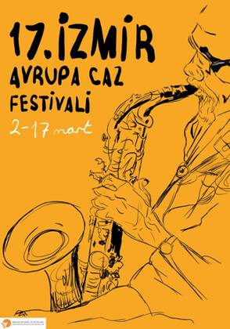
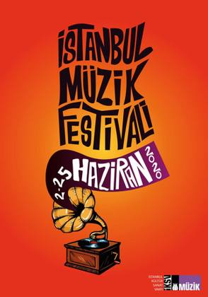
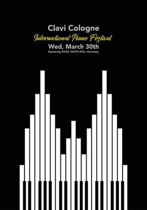
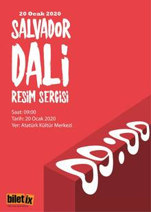
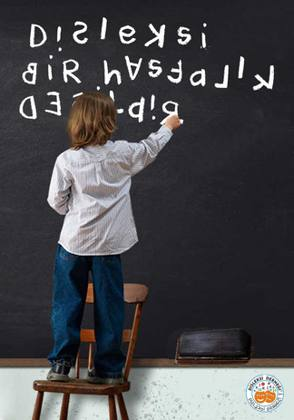
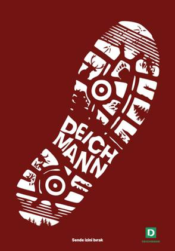

Portfolio · Design d'édition · Chaîne graphique · Enseignement
Le livre,
de la grille
à la presse.
Je conçois des objets éditoriaux et j'ai enseigné pendant seize ans, à l'université, les procédés d'impression, le design graphique, la typographie et la mise en page. Ce portfolio réunit trois projets de 2026, un projet de recherche-création et un bilan de ces années d'enseignement.
Formation
Maîtrise en technologies de l'édition et de l'impression (Université de Marmara) ; doctorat en cotutelle, Université Bordeaux Montaigne et Université Gazi.
Enseignement
Chargée d'enseignement de 2007 à 2023 : typographie, conception de pages, design graphique assisté par ordinateur, techniques d'impression.
Pratique récente
Catalogue d'exposition de 40 pages, système de figures pour un ouvrage aux PUQ, identité imprimée d'une installation (2026).
Chaîne graphique
Prépresse, offset, flexographie, impression numérique, sérigraphie, gravure ; normes de qualité ISO 12647.
Catalogue · 2026–2027
Le catalogue d'exposition : donner une forme de livre à une installation
Conception graphique du premier livre issu de l'installation De l'expression du rapport au travail des professeures : exposition en cours, présentée au 9e Congrès international des recherches féministes dans la francophonie (Université Laval, 20 août 2026).
Le catalogue réunit les écrits et les œuvres de cinq professeures. Il devait garder la trace d'un accrochage éphémère sans le reproduire tel quel : passer du mur à la page, du parcours dans une salle à une suite de doubles pages.
Un système plutôt qu'une suite de pages
Chaque autrice reçoit une couleur, qui porte sa section du début à la fin. Toutes les sections s'ouvrent de la même façon : un ex-libris gravé à son nom, le cartel de l'œuvre, un grand chiffre et une courte citation. Le pied de page reprend partout le même titre courant en trois parties (autrice, œuvre, événement) et le folio.
Le fil rouge
Dans la salle, un fil de laine rouge reliait les tables au mur des écrits. Dans le livre, il devient un trait dessiné qui court au bas de chaque page, se noue, se dénoue et traverse le pli.
Avant l'impression
Le document présenté ici est une épreuve de lecture. Les étapes à venir sont celles de la préparation à l'impression : conversion des couleurs en CMJN selon le profil de l'imprimeur, fonds perdus de 3 mm pour les aplats à bord vif, texte vectoriel, épreuve contractuelle et choix du papier.
- Titre
- Le catalogue d'exposition (Livre 1)
- Direction
- Claire Moreau, professeure, Université de Sherbrooke
- Conception
- Esma Unsal-Laratte
- Œuvres
- Claire Moreau, Karyne Gamelin, Emmanuelle Doré, Virginie Thériault, Brigitte Gagnon
- Format
- 150 × 220 mm, à la française
- Pagination
- 40 pages, couleurs
- État
- Épreuve, novembre 2026
- Parution
- Prévue en 2027, maison d'édition à confirmer
- Outil
- Adobe Illustrator
- Soutien
- CRSH, Développement Savoir (2023-2025)
1 # ProfeClaire Moreau
2 # Ma placeKaryne Gamelin
3 # AimantationEmmanuelle Doré
4 # Poids suspendusVirginie Thériault
5 # Grandir en conscienceBrigitte Gagnon
Système de figures · 2026
Treize figures pour un ouvrage universitaire
Conception d'un système d'illustrations pour l'ouvrage de Karyne Gamelin sur les rencontres d'équipes éducatives, à paraître aux Presses de l'Université du Québec.
La commande portait sur treize figures et quatre icônes de section, réparties dans les quatre parties du livre. Les contraintes étaient celles de l'édition savante : reproduction en noir et blanc, lisibilité en petit format, texte modifiable par l'éditeur, cohérence d'un chapitre à l'autre.
J'ai présenté trois propositions, trois langages pour une même structure argumentative. Les oiseaux reprennent un trait fin : deux personnages en dialogue, un fil qui se noue entre eux. Les schémas traduisent les concepts en pictogrammes, spirales et trames. Les pandas transposent l'abstraction en scènes narratives, plus accessibles pour un lectorat de premier cycle.
Une seconde commande, pour un article du Réseau d'information pour la réussite éducative, a donné une infographie en trois versions : même structure en trois colonnes, trois registres visuels, pour que les autrices choisissent le ton qui convient à la revue.
- Ouvrage
- Gamelin, K. (sous presse). Et si on parlait des rencontres d'équipes éducatives ? Soutien au développement d'une pensée stratégique. Presses de l'Université du Québec.
- Corpus
- 13 figures (1.1 à 4.2), 4 icônes de section
- Contraintes
- Noir et blanc, petit format, texte modifiable
- Article
- Gamelin, K. et Sénéchal, R. (accepté). Le travail émotionnel : une stratégie pour mobiliser son équipe. RIRE.
- Année
- 2026
Installation · 2026
Affiche, cartels et texte mural : une famille d'imprimés pour une installation
Direction artistique et conception graphique de l'installation De l'expression du rapport au travail des professeures, recherche dirigée par Claire Moreau, CIRFF 2026, Université Laval.
L'identité repose sur un dessin au trait fin : une professeure dont le bras porte, comme des annotations manuscrites, les mots recueillis pendant la recherche. Autour de ce dessin, une seule hiérarchie typographique sert l'affiche, l'invitation, le texte mural et les cartels.
Douze écrits ont été composés, imprimés et accrochés au mur, chacun avec son cartel. C'est cette famille d'imprimés qui a ensuite fourni la matière et les règles du catalogue.
- Rôle
- Direction artistique, conception graphique, commissariat
- Livrables
- Affiche A1, invitation, texte mural, cartels, panneau participatif, boucle vidéo de 15 s
- Équipe
- Claire Moreau (direction), Karyne Gamelin, Emmanuelle Doré, Virginie Thériault
- Lieu
- Pavillon Charles-De Koninck, Université Laval, 20 août 2026
Thèse · 2017–2021
L'ex-libris augmenté : quand l'imprimé se prolonge à l'écran
Réinterprétation de l'ex-libris par l'animation et la réalité augmentée, au cœur de ma thèse de doctorat « Ex-libris expérimental » (Université Bordeaux Montaigne et Université Gazi).
L'ex-libris est la plus petite forme d'édition : une estampe collée dans un livre pour dire à qui il appartient. J'ai dessiné une série de portraits imprimés, puis je les ai prolongés à l'écran.
Scanné avec un téléphone, l'ex-libris imprimé s'ouvre sur un portrait animé. L'objet reste une image imprimée, liée à la matérialité du livre ; il devient aussi une interface, à l'échelle d'une main.
Ce travail nourrit mon enseignement : une même identité graphique doit tenir sur le papier et à l'écran, et chaque support a ses propres règles de lisibilité.
- Corpus
- Sept ex-libris portraits, trois ex-libris en réalité augmentée, trois brochures vidéo animées, carte USB interactive
- Techniques
- Illustration vectorielle, animation 2D/3D, réalité augmentée mobile
- Diffusion
- International Journal of Exlibris (2019) ; International Journal of Social Sciences (2023) ; exposition Ex Amore Ruse, Sofia (2014)
Hasip Pektaş
Hatice Öz Pektaş
Esma Unsal-Laratte
Armağan Gökçearslan
Olivier Bessard-Banquy
2007–2023
Seize années d'enseignement, entre la page et la presse
De 2007 à 2023, j'ai été chargée d'enseignement à l'Université Istanbul Aydın puis à l'Université Ondokuz Mayıs, dans les départements Impression & Publication et Design graphique. J'y ai donné des cours de conception de pages, de design graphique assisté par ordinateur, de typographie, de design Web et de techniques d'impression.
d'enseignement théorique à l'Université Ondokuz Mayıs, 2010-2023
de travaux pratiques en atelier, 2010-2023
de satisfaction aux évaluations institutionnelles des cours
| Cours | Forme | Sessions |
|---|---|---|
| Conception de pages assistée par ordinateur I et II | Théorie et atelier, 56 h | 2021-2023, 4 sessions |
| Design graphique assisté par ordinateur I et II | Théorie et atelier, 56 h | 2017-2023, 9 sessions |
| Lettrage et typographie | Cours, 28 h | 2011-2014, 7 groupes |
| Design Web | Théorie et atelier, 42 h | 2011-2013, 6 groupes |
| Illustration | Théorie et atelier, 84 h | 2015 |
| Préparation de projets | Cours, 28 h | 2011-2016, 5 sessions |
| Reproduction et théorie des couleurs | Cours, 56 h | 2011-2015, 5 groupes |
- Un système avant une pageLes étudiantes et étudiants conçoivent d'abord la grille, la hiérarchie et les styles, puis les éprouvent sur plusieurs pages. Une belle double page ne fait pas un livre.
- La critique comme méthodeChaque étape passe au mur : chemin de fer, gabarits, épreuves. Le groupe apprend à nommer ce qu'il voit et à justifier un choix typographique.
- Jusqu'au fichier d'impressionUn projet se termine avec un fichier prêt pour l'imprimeur : formats, fonds perdus, couleurs, papier, façonnage. La chaîne graphique fait partie du design.
Travaux d'étudiantes et d'étudiants encadrés en atelier

Festival de jazz d'Izmir

Festival de musique d'Istanbul

Clavi Cologne

Exposition Salvador Dalí

Dyslexie, sensibilisation

Empreinte typographique
Formation, pratique et chaîne graphique
Formation
- Doctorat en cotutelle, Université Bordeaux Montaigne et Université Gazi. Thèse : « Ex-libris expérimental ».
- Maîtrise de recherche en technologies de l'édition et de l'impression, Université de Marmara. Mémoire sur l'impression flexographique des étiquettes.
- Licence en enseignement des technologies de l'édition et de l'impression, Université de Marmara.
- Diplôme en technologies d'impression et de publication, Université Ondokuz Mayıs.
Pratique et enseignement
- Professionnelle de recherche, Faculté de médecine, Université Laval. Dispositifs pédagogiques visuels, projet Humanités en santé.
- Conception graphique, installation et catalogue du CIRFF 2026 ; figures pour un ouvrage aux PUQ.
- Chargée de cours invitée, Rochester Institute of Technology. Normes professionnelles et méthodologies de conception.
- Chargée d'enseignement, Université Istanbul Aydın puis Université Ondokuz Mayıs.
- Graphiste éditoriale, Association des fabricants d'emballages (ASD), Istanbul. Catalogue de l'industrie turque de l'emballage.
Chaîne graphique
- Offset, flexographie, impression numérique, sérigraphie, gravure, tampographie.
- Préparation des fichiers, formes de découpe, contrôle de la reproduction des couleurs.
- Communications sur ISO 12647-6 et les standards BRC/IOP, International Printing Technology Symposium, Istanbul.
- Membre du jury, Concours international de conception et d'impression d'étiquettes, Istanbul.
- Partenariats pédagogiques avec Heidelberg, DuPont et Böttcher.
Publications choisies
- « Introduction and Types of Paper Packaging », dans Paper Packaging: Innovations, Sustainability and Applications, Elsevier. À paraître.
- « Augmented Bookplates: Giving the Ex-Libris a Voice », Leonardo, MIT Press. Soumis, en évaluation.
- « Photographie et ex-libris », dans Photographie et vidéographie, Université Atatürk.
- « Experimental Exlibris and New Approaches », International Journal of Exlibris.
Contact
Esma Unsal-Laratte, Ph.D.
- Courriel
- esmalaratte@gmail.com
- linkedin.com/in/esmalaratte
- ORCID
- 0000-0003-3581-8008
Québec, novembre 2026. Les œuvres et les textes reproduits appartiennent à leurs autrices ; le catalogue est présenté à l'état d'épreuve avant parution.